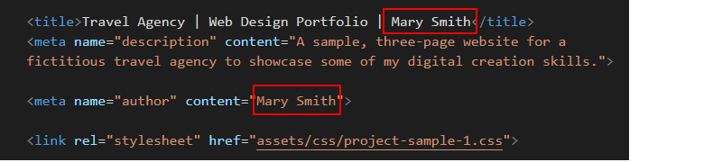
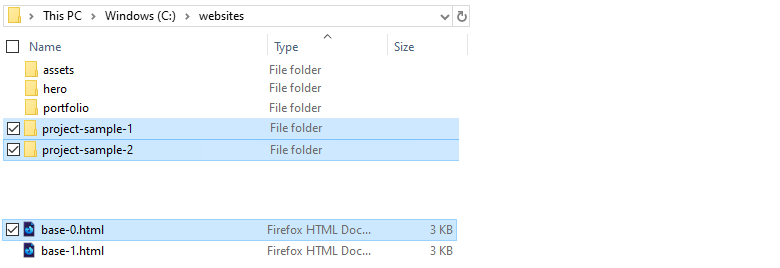
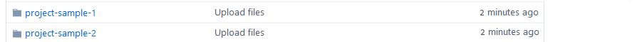

Introduction
Here you will work with two sample final project templates, each one of which contains three web pages. You can display finished versions of these pages by clicking the images below.

Project folders and files
Your first step is to create two folders to store the HTML files, CSS files, and images needed for the sample projects.
- If a folder named websites does not already exist on your computer, create it now.
- Download the compressed file for the first sample project to your computer:
project-sample-1.zip
- Uncompress the ZIP file into a sub-folder of your websites folder named project-sample-1.
- Download the compressed file for the second sample project to your computer:
project-sample-2.zip
- Uncompress the ZIP file into a sub-folder of your websites folder named project-sample-2.
- In File/Windows Explorer, click the index.html files for each of the two projects to open their home web pages with your default web browser. The files will be at the following locations on a Windows PC.
file:///C:/websites/project-sample-1/index.html
file:///C:/websites/project-sample-2/index.html

Now you can examine and be guided by the files you have downloaded.
Sample Project 1: Travel Agency
The first sample project is for a fictitious web design and marketing agency. It contains the following three web pages:
- index.html: This contains a large hero background image, with centre-aligned text. Under it is a block of single-column of text, and under that, a three-column layout with images and text.
- destinations.html: This contains a large hero background image, also with centre-aligned text. Under it is a single-column text block, and under that, three sections. Each of these sections contains a single-column heading above a four-column layout with images and text.
- about-us.html: Another large hero background image, with centre-aligned text, above a block of single-column text. Beneath that are two rows of three columns with images and text.
For all three pages, the <h1> and <h2> text is animated so that it slides down from the top of the screen.
Header
All of the three web pages contain both a desktop and a mobile header, with a logo and a list of menu options in each case.

- Logo: A 200 x 42 pixels image. Note that the image links to the home page of the website (such as marysmith.github.io/index.html) – and not to the home page of the three-page sample project.
- Menu options: There are three of these. The first menu option links to the index.html page of the three-page sample project – not to the index.html page of your student website.
- Fake button: This is for display only and does not link anywhere.
Footer
The footer section has the same content on both desktop and mobile screens.

- Links: None of the links are related to the sample web project. They are the same links as are on other pages of your student web site, such the links in the footer of your portfolio and contact pages.
- Centre text: This is a short description of the web project.
Sample Project 2: Web Design Company
The second sample project is for a fictitious web design and marketing company. It contains the following three web pages:
- index.html: This contains a background hero image, with left-aligned text. Under it is a block of single-column of text, and under that, a three-column layout with images and text. The last item on the page above the footer is a single-column block of text.
- services.html: This contains a hero background image, also with left-aligned text. Under it is a single-column text block, and under that, two rows of four-column layouts. Each column contains a Font Awesome icon above a small heading. The last item above the footer is a single-column block of text.
- team.html: Another background hero image, with left-aligned text, above a block of single-column text. Beneath that is one row of three columns with images and text. Finally, above the footer, is a block with a single column of text.
For all three pages, the <h1> and <h2> text is animated so that it slides in from the left of the screen.
Headers and Footers
The headers (logo and menu options) and footers for this project are similar to those for the first sample project.
Updating the meta tags
Before you upload the two sample three-page websites to your account on GitHub, you need to update the details in the <head> sections.
For each sample website, open the three web pages and, within the <head> section, update the content of the <title> and <author> meta tags with your own name.

When finished, save the HTML files.
Updating the Google Analytics ID
For each sample website, open the three web pages and, within the <head> section, update the Google Analytics Tracking Code.

Each Google Tracking Code has a unique ID in its first and last line. Replace the sample Google Tracking ID with your own Google Tracking ID. The instructions for viewing your website’s unique Google Tracking ID are here.
When finished, save the HTML files.
Adding the privacy pop-up code and message
At the bottom of all six HTML files, just before the closing </body> tag, copy-and-paste the following ‘pop-up‘ privacy code and message. You can find the instructions for generating this code here.
<script src="https://cdn.jsdelivr.net/npm/cookieconsent@3/build/cookieconsent.min.js" data-cfasync="false"></script>
<script>
window.cookieconsent.initialise({
"palette": {
"popup": {
"background": "#000"
},
"button": {
"background": "#f1d600"
}
},
"content": {
"href": "https://username.github.io/privacy.html"
}
});
</script>
</body>
</html>
Near the end of this code is the sample web address of https://username.github.io/privacy.html.

Change this to the web address of the privacy page on your own website.
Uploading the two sample project websites to GitHub
After updating the two sample project websites with your own details, the next step is to upload them to your account on GitHub.
All the files for these two projects are in two sub-folders named project-sample-1 and project-sample-2 of your websites folder. So you will need to upload these two sub-folders, which contain both files and other sub-folders, to your account on GitHub.
However, GitHub will not allow you to upload only a folder or folders from your computer.
For this reason, you need to upload a file along with your project-sample-1 and project-sample-2 folders. It can be any file. Follow these steps.
- Sign in to your account at GitHub.com.

- On your GitHub home page, click the name of the repository that holds your web pages. Its name will look as follows, where username is your chosen username on GitHub.
username.github.io

- On the next screen displayed, near the centre of the screen, click the Upload files button.

- On your computer, display your websites folder. You should see that it contains the two sub-folders named project-sample-1 and project-sample-2.
- On a Windows computer, click on the project-sample-1 folder to select it.
Next, press and hold down the CTRL key, and then click on the project-sample-2 folder to select it.
Finally, click on any file in your websites folder to select it.
- On an Apple Mac, press and hold down the COMMAND key, and click on the project-sample-1 folder to select it.
Next, click on the project-sample-2 folder to select it.
Finally, click on any file in your websites folder to select it.
- Drag-and-drop the project-sample-1 and project-sample-2 folders and whatever file you have selected to upload them to your GitHub account. In the example below, the file selected along with the two folders is named base-0.html.

You do not need to select this particular file. You can use any file. But you cannot upload the two folders on their own.
- After uploading the two folders and your selected file, scroll down to the bottom of the GitHub screen, enter a short message in the Commit changes box, click the Commit changes button, and wait for the upload to complete.

- Your main repository screen should now contain two folders named project-sample-1 and project-sample-2.

The web pages of the two sample projects will display correctly online only when:
- All the required files are uploaded to GitHub.
- All the files are present in their correct folders and sub-folders on GitHub.
The two sample projects are now published on GitHub at web addresses similar to the following, where username is the username you have chosen for your GitHub account:
https://username.github.io/project-sample-1/index.html
https://username.github.io/project-sample-2/index.html
or, simply
https://username.github.io/project-sample-1
https://username.github.io/project-sample-2
It may take a few minutes for your uploaded files to appear on GitHub.
Return to Contents.